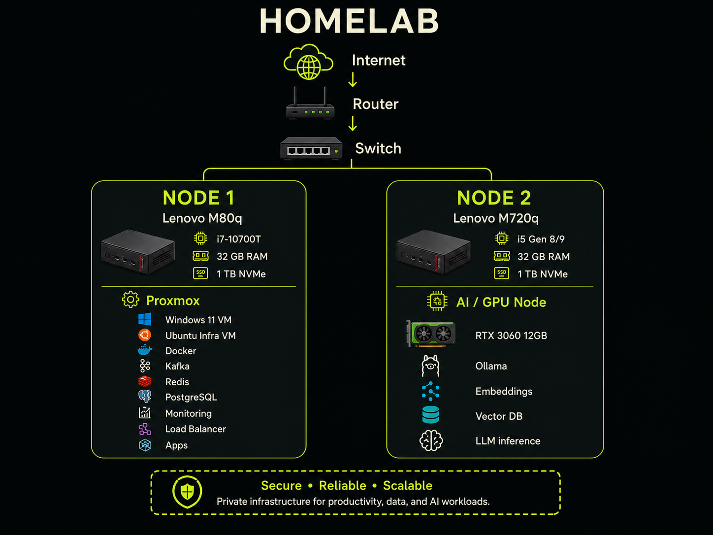

Software Engineering
Aplikasi web modern, API, integrasi sistem, dan database.
AMN / DIGITAL OPERATOR / JKT—ID
Saya membangun aplikasi yang andal, mengotomasi proses deployment, dan memastikan infrastruktur server tetap aman, stabil, serta siap berkembang.
 ENGINEER
ENGINEER$ deploy portfolio
✓ production is liveTentang saya
Saya mengembangkan solusi digital dari antarmuka pengguna hingga layanan backend dan lingkungan produksinya. Bagi saya, produk yang baik bukan hanya terlihat rapi—tetapi juga cepat, mudah dirawat, dan dapat diandalkan.
Saat ini saya merangkap sebagai Software Engineer, DevOps, dan Server Specialist: menangani pengembangan aplikasi, otomasi CI/CD, deployment, konfigurasi server, serta pemantauan layanan.
Aplikasi web modern, API, integrasi sistem, dan database.
Pipeline otomatis, deployment konsisten, dan workflow delivery.
Konfigurasi, observabilitas, troubleshooting, dan reliability.
Pengalaman terkini
PT Indonesia Comnets Plus (PLN Icon Plus) · Jakarta
Mengembangkan sistem aplikasi pelayanan pelanggan PLN sekaligus mendukung delivery dan operasional layanan pada lingkungan server.
Linux playground
AMN / SANDBOX / READ-ONLY
Terminal ini adalah simulasi aman di browser. Ketik help untuk melihat command yang tersedia.
_ _ _ _ __ __
/ \ | \ | | / \ | \/ |
/ _ \ | \| | / _ \ | |\/| |
/ ___ \| |\ |/ ___ \| | | |
/_/ \_\_| \_/_/ \_\_| |_|
Welcome to Anam's Terminal Portfolio
Simulasi client-side · tidak terhubung ke server · command dibatasi
Karya pilihan
Visualisasi proyek yang menggambarkan fokus saya pada infrastructure, observability, dan pengembangan aplikasi web.

View topology ↗Architecture draftRancangan private infrastructure dua node untuk virtualisasi, data services, observability, aplikasi, dan eksperimen AI lokal.
Proxmox · Docker · AI Node
Merancang lingkungan privat yang aman untuk menjalankan workload aplikasi, data, monitoring, dan AI tanpa mengganggu sistem produksi.
Menyusun topologi dua node, pembagian workload, spesifikasi hardware, lapisan virtualisasi, serta service yang akan dijalankan.
Proxmox, Windows 11 VM, Ubuntu, Docker, Kafka, Redis, PostgreSQL, monitoring, Ollama, embeddings, dan vector database.
Architecture draft telah terdokumentasi dan menjadi acuan untuk tahap pengadaan perangkat, implementasi, serta pengujian bertahap.
 Observability ↗Concept visual
Observability ↗Concept visualKonsep pemantauan health, resource, log, dan availability untuk mendeteksi masalah sebelum berdampak ke pengguna.
Metrics · Logs · Uptime
Menyatukan indikator kesehatan layanan agar anomali pada resource, log, dan availability lebih cepat terlihat.
Menentukan sinyal operasional penting, menyusun struktur dashboard, dan merancang alur pemeriksaan ketika layanan bermasalah.
Linux metrics, service health check, log monitoring, uptime monitoring, dan dashboard observability.
Menghasilkan konsep monitoring terpusat yang mempermudah pemeriksaan kondisi layanan dan membantu proses troubleshooting lebih terarah.
 Web App ↗Concept visual
Web App ↗Concept visualVisualisasi aplikasi responsif untuk merangkum percakapan, performa tim, dan insight pelayanan dalam satu tampilan.
Frontend · Backend · API
Mendukung proses pelayanan pelanggan melalui aplikasi yang menggabungkan informasi operasional dalam satu antarmuka.
Mengembangkan dan meningkatkan fitur aplikasi, mengintegrasikan frontend dengan layanan backend, serta mendukung deployment pada server.
JavaScript, Java, Quarkus, REST API, MySQL/PostgreSQL, Linux, dan CI/CD.
Fitur pelayanan dapat dikembangkan dan didistribusikan melalui alur delivery yang lebih konsisten, dengan dukungan operasional setelah deployment.
Ceritakan kebutuhannya. Saya siap berdiskusi tentang pengembangan produk, otomasi deployment, dan reliability sistem.
Chat via WhatsApp ↗